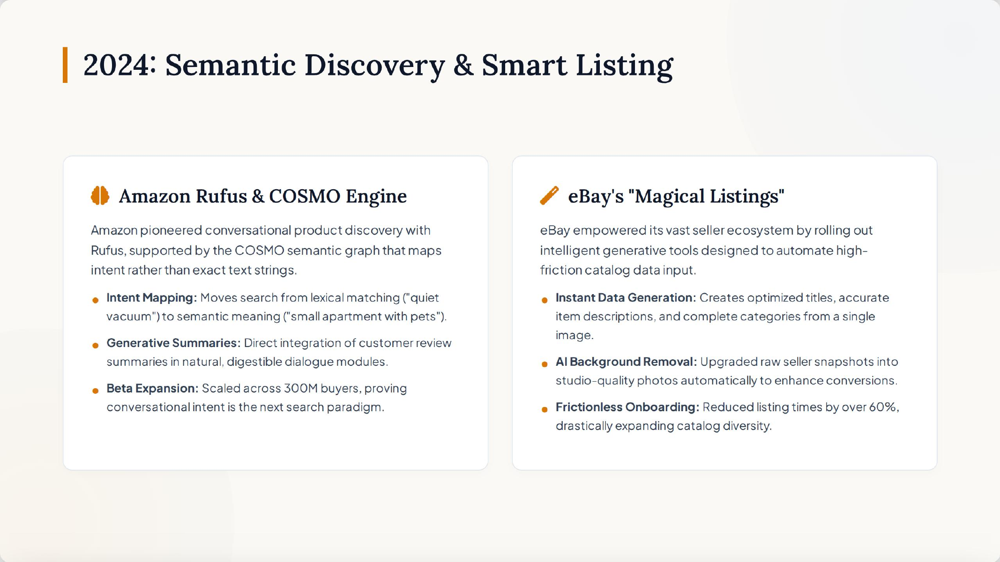

The E-Commerce AI Revolution, 2024–2026
This work demonstrates my ability to research emerging AI capabilities, organize them into a coherent market timeline, and translate competitor activity into strategic priorities for a specific company.
- Audience
- Retail and e-commerce leaders evaluating where AI can create member and operational value.
- Comparison
- Costco is the strategic focus; Amazon is the primary benchmark, supported by examples from eBay, Temu, Shein, and Alibaba.
- Value
- The timeline helps leaders see not only what changed, but what to prioritize next in discovery, supply chain intelligence, and member experience.